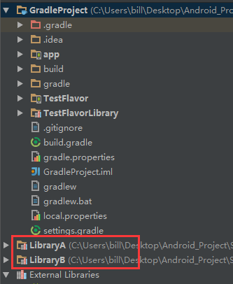
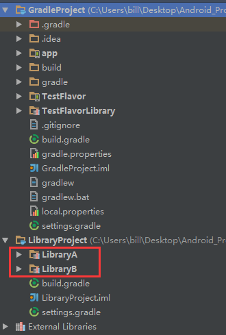

场景
这里有两个AS项目，分别为projectA和projectB，结构分别如下：
1 | projectA/ |
projectAsettings.gradle内容：include 'bluewhale', 'krill'
1 | projectB/ |
projectBsettings.gradle内容：include 'hello', 'krill'
你可以注意到projectA和projectB均包含相同的modulekrill，实际上他是一个相同的Library Project，那么问题就来了：如何高效的复用现有的module？实际开发中这个问题应该比较常见，特别针对于同时需要开发多个应用的场景，解决方法如下：
单个Library Module复用
假设当前Project为GradleProject，在其settings.gralde中include项目的时候指定
projectDir目录位置，如：1
2
3
4include ':LibraryA'
project(':LibraryA').projectDir = new File('../LibraryProject/LibraryA')
include ':LibraryB'
project(':LibraryB').projectDir = new File('../LibraryProject/LibraryB')然后在某个App Module中添加dependencies 即可：
1
2
3
4
5dependencies {
...
compile project(':LibraryA')
compile project(':LibraryB')
}最后的情况如下截图：

多个Library Module统一管理
上面的方式会有一个问题，依赖的library module都是以Project的形式导入的，如果引用越来越多library，外面的Project列表就会越来越长，这个时候我们可以把library module都放在一个Project中统一管理起来。
首先新建一个LibraryProject目录，将用到的library module放进去，如LibraryA、LibraryB…
拷贝一个默认的build.gradle过去：
1
2
3
4
5
6
7
8
9
10
11
12
13
14
15
16
17
18
19
20
21
22
23// Top-level build file where you can add configuration options common to all sub-projects/modules.
buildscript {
repositories {
jcenter()
}
dependencies {
classpath 'com.android.tools.build:gradle:1.3.0'
// NOTE: Do not place your application dependencies here; they belong
// in the individual module build.gradle files
}
}
allprojects {
repositories {
jcenter()
}
}
task clean(type: Delete) {
delete rootProject.buildDir
}settings.gradle内加入：
1
include ':LibraryA', ':LibraryB'，
最终目录结构如下
1
2
3
4
5LibraryProject/
├----build.gradle
├----settings.gradle
├----LibraryA/
├----LibraryB/最后修改一下GradleProject中的settings.gralde
1
2
3
4
5
6
7...
// Root project of common library
include ':LibraryProject'
project(':LibraryProject').projectDir = new File('../LibraryProject/')
// Include library module we need
include ':LibraryProject:LibraryA'
include ':LibraryProject:LibraryB'最后的最后在GradleProject中的某个App Module中添加dependencies 即可（注意要添加:LibraryProject路径）：
1
2
3
4
5dependencies {
...
compile project(':LibraryProject:LibraryA')
compile project(':LibraryProject:LibraryB')
}最后的情况如下截图：

（注意GradleProject和LibraryProject在同一个目录中哦！）
参考
http://www.philosophicalhacker.com/2014/10/02/an-alternative-multiproject-setup-for-android-studio/
https://docs.gradle.org/current/userguide/build_lifecycle.html#sec:multi_project_builds
下面这个是博主在SO上面的提问&回答，觉得OK请点个up vote哦
http://stackoverflow.com/questions/31910947/how-to-reuse-the-submodule-in-gradle